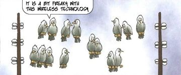
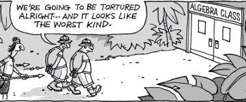

Here I jot down my notes about what I learned in my Ph.D., as well as some other topics I find important. I do this for a bunch of reasons:
- It helps consolidate my knowledge about these topics by forcing me to explain them.
- It improves my teaching skills, since I have to look at simple ways to explain things.
- It gives me a database that I can go back and remember what I need.
- It gives me the satisfaction of knowing that people are learning something from me.
If you have any questions or comments for me, you can do them at onmyphd@gmail.com.
Signal processing
| MicroelectronicsCredits: Morten Ingemann
|
AlgebraCredits: Ted Blackman
| StatisticsCredits: How I met your mother
|
Tweet